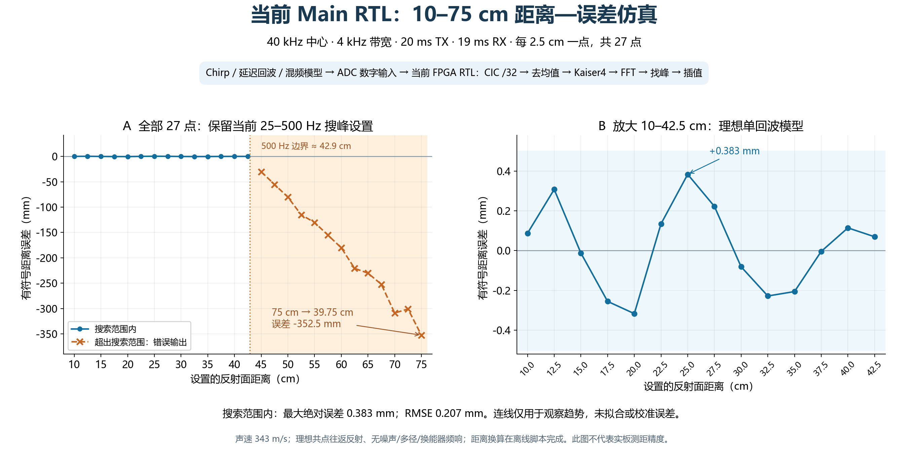

当前 Main：10–75 cm 距离—误差扫描
2026-10-21 · 27 点，间隔 2.5 cm · 沿用当前已上板版本的生产 RTL 与参数。
当前配置不能正确覆盖全部 75 cm。 25–500 Hz 搜峰范围对应理想反射距离约 2.14–42.88 cm。
本次保留限制：10–42.5 cm 的 14 点在范围内；45–75 cm 的 13 点在范围外。范围外的读数仍画出，但不能解释为有效测距。

PNG 图片 · SVG 矢量图 ·
27 点原始结果 CSV · 测试证据与源码快照
这次模拟了哪些部分？
与当前主板测试相同的默认设置：40 kHz 中心、4 kHz 带宽、20 ms 发射、幅度 0.25；RX 延迟 1 ms、接收 19 ms；
ADC 原始采样率 165 MHz /144，FFT 前 CIC3 /32 后约 35.807 kS/s，672 个有效点补零到 1024 点；Kaiser β=4，搜索第 1–14 格，FPGA 三点对数功率插值。
真正运行生产 RTL 的部分：ADC 数字样本进入 MainCicDecimator → MainFftProcessor → 帧缓存/整帧去均值 →
Kaiser4 / FFT → 功率 → 最大峰 → FPGA 插值 → MainPeakReport 的 M3 字节报告。使用真实 Intel altsyncram 仿真模型；
仅在 testbench 压缩了采样间空闲时钟，物理采样率仍按当前 Main 的数值换算。
生产 HDL、ROM、上位机、SOF 和原有 testbench 文件未修改，源文件 SHA-256 可核对。
由数学模型提供的部分：Chirp 及其延迟回波、模拟乘法器和理想低通。
设 τ=2R/343，S=4000/0.020=200000 Hz/s，理想拍频 f_b=Sτ。
不是直接给 FPGA 填入期望峰值：逐点生成两条 chirp 相乘后的差频波形，量化成 16 位 ADC 输入，再交给实际 RTL 运算。
采用差频相位 2π(f_start τ + Sτt − Sτ²/2)，反射附加相位取 0；考虑回波到达前输入为空、
20 ms TX 参考结束后的截断。到较远目标时，回波会在 RX 窗口开始后才到达。
混频后幅度固定为 7000 ADC codes、直流偏置 111 codes，仅用于隔离算法误差，未套用未知的距离衰减或接收增益。
未模拟本次 TX 生成器 RTL/DAC、ADC SPI 引脚时序、完整 Main 顶层、UART 逐位传输、换能器频响、
模拟低通起止瞬态、噪声、多径、串扰和系统距离零点。不能把理想模型误差当成实板精度。
当前 FPGA/上位机报告频率；本报告用 R_est=c·f_est/(2S) 离线换算距离，未给产品新增距离显示。
结果与检查
27 帧的 CIC 数据、整帧均值、窗输入、全部 FFT 实虚部和功率逐点通过参考检查；峰值索引、插值公式、
M3 校验与连续帧通过。通过的是计算与协议检查，不是全部 27 个距离均能正确测量。
- 10–42.5 cm：最大绝对误差 0.383 mm，RMSE 0.207 mm。
同组数据只使用整数 FFT 格时，最大误差约 14.881 mm；当前插值改善了这组理想单峰的频率估计。
- 12.5 cm 理想拍频约 145.773 Hz，本次 RTL 为 146.131 Hz，没有出现 380 Hz 突跃。
这与理想单回波条件一致；不能排除真实环境中的多峰竞争。
- 75 cm 理想拍频约 874.636 Hz，超出当前 500 Hz 搜索上限。RTL 选择到范围内的谱泄漏/旁瓣，显示约
463.523 Hz，离线换算为 39.747 cm，误差 -352.529 mm。
- 范围外帧也可能具有 flags=0，部分还能成功插值；这不代表物理目标正确。当前状态位并未判断真实主峰是否在搜索区外。
- 未做距离拟合、固定偏移校准或误差平滑。图中相邻点连线只用于观察趋势。
Questa 日志记录 0 errors、62 warnings，涉及 Intel 库未用端口和复位前未知值；有效帧无未知结果，数值检查全部通过。
完整日志保存在 evidence.zip。
每个距离点的结果
| 真实距离 cm | 理想拍频 Hz | 当前流程输出 Hz | 换算距离 cm | 误差 mm | 峰格 | 插值状态 | 范围判断 |
|---|
| 10 | 116.618 | 116.720 | 10.0087 | +0.087 | 3 | 0 | 范围内 |
| 12.5 | 145.773 | 146.131 | 12.5307 | +0.307 | 4 | 0 | 范围内 |
| 15 | 174.927 | 174.913 | 14.9988 | -0.012 | 5 | 0 | 范围内 |
| 17.5 | 204.082 | 203.784 | 17.4745 | -0.255 | 6 | 0 | 范围内 |
| 20 | 233.236 | 232.867 | 19.9684 | -0.316 | 7 | 0 | 范围内 |
| 22.5 | 262.391 | 262.547 | 22.5134 | +0.134 | 8 | 0 | 范围内 |
| 25 | 291.545 | 291.992 | 25.0383 | +0.383 | 8 | 0 | 范围内 |
| 27.5 | 320.700 | 320.959 | 27.5222 | +0.222 | 9 | 0 | 范围内 |
| 30 | 349.854 | 349.760 | 29.9919 | -0.081 | 10 | 0 | 范围内 |
| 32.5 | 379.009 | 378.743 | 32.4772 | -0.228 | 11 | 0 | 范围内 |
| 35 | 408.163 | 407.924 | 34.9794 | -0.206 | 12 | 0 | 范围内 |
| 37.5 | 437.318 | 437.313 | 37.4996 | -0.004 | 13 | 0 | 范围内 |
| 40 | 466.472 | 466.606 | 40.0114 | +0.114 | 13 | 0 | 范围内 |
| 42.5 | 495.627 | 495.708 | 42.5070 | +0.070 | 14 | 0 | 范围内 |
| 45 | 524.781 | 489.553 | 41.9792 | -30.208 | 14 | 4 | 超出搜峰范围 |
| 47.5 | 553.936 | 489.553 | 41.9792 | -55.208 | 14 | 4 | 超出搜峰范围 |
| 50 | 583.090 | 489.553 | 41.9792 | -80.208 | 14 | 4 | 超出搜峰范围 |
| 52.5 | 612.245 | 477.924 | 40.9820 | -115.180 | 14 | 0 | 超出搜峰范围 |
| 55 | 641.399 | 489.553 | 41.9792 | -130.208 | 14 | 4 | 超出搜峰范围 |
| 57.5 | 670.554 | 489.553 | 41.9792 | -155.208 | 14 | 4 | 超出搜峰范围 |
| 60 | 699.708 | 489.553 | 41.9792 | -180.208 | 14 | 4 | 超出搜峰范围 |
| 62.5 | 728.863 | 471.436 | 40.4256 | -220.744 | 13 | 0 | 超出搜峰范围 |
| 65 | 758.017 | 489.553 | 41.9792 | -230.208 | 14 | 4 | 超出搜峰范围 |
| 67.5 | 787.172 | 493.036 | 42.2778 | -252.222 | 14 | 0 | 超出搜峰范围 |
| 70 | 816.327 | 456.112 | 39.1116 | -308.884 | 13 | 0 | 超出搜峰范围 |
| 72.5 | 845.481 | 494.559 | 42.4085 | -300.915 | 14 | 0 | 超出搜峰范围 |
| 75 | 874.636 | 463.523 | 39.7471 | -352.529 | 13 | 0 | 超出搜峰范围 |
插值状态 0：插值算术有效；4：当前搜索区最大值不是包含左右邻点时的局部最大值，采用整数格回退。
范围判断使用已知仿真真值，因此只用于本报告诊断；当前硬件不会直接知道目标真值。
复现
- 保留当前项目代码，运行
python run_sweep.py --project 工作工程目录 --output 本地输出目录。
可用 --vsim 指定 Questa；默认使用当前安装路径。
- 也可解压 evidence.zip，使用其中的 source_snapshot 作为 --project，可固定到本次测试源码。
- run_sweep.py 重新生成 27 组 ADC 输入并执行生产模块仿真；
--analyze-only 只复核已完成的输出。
- 在本报告目录执行
python build_figure.py 可从 CSV 重绘图片。依赖 numpy、matplotlib；未安装微软雅黑时需指定可用中文字体。
检查摘要 · 完整模型与参数 · 仿真脚本 · 绘图脚本
若下一步需要正确覆盖 75 cm，应先把峰值搜索范围覆盖约 875 Hz 并留余量，再复测。
875 Hz 已在当前采样率和 1024 点 FFT 的计算频带内，当前首要限制是搜峰范围，不是缺少采样点。
本次按要求保留已上板流程，没有扩大搜索上限。